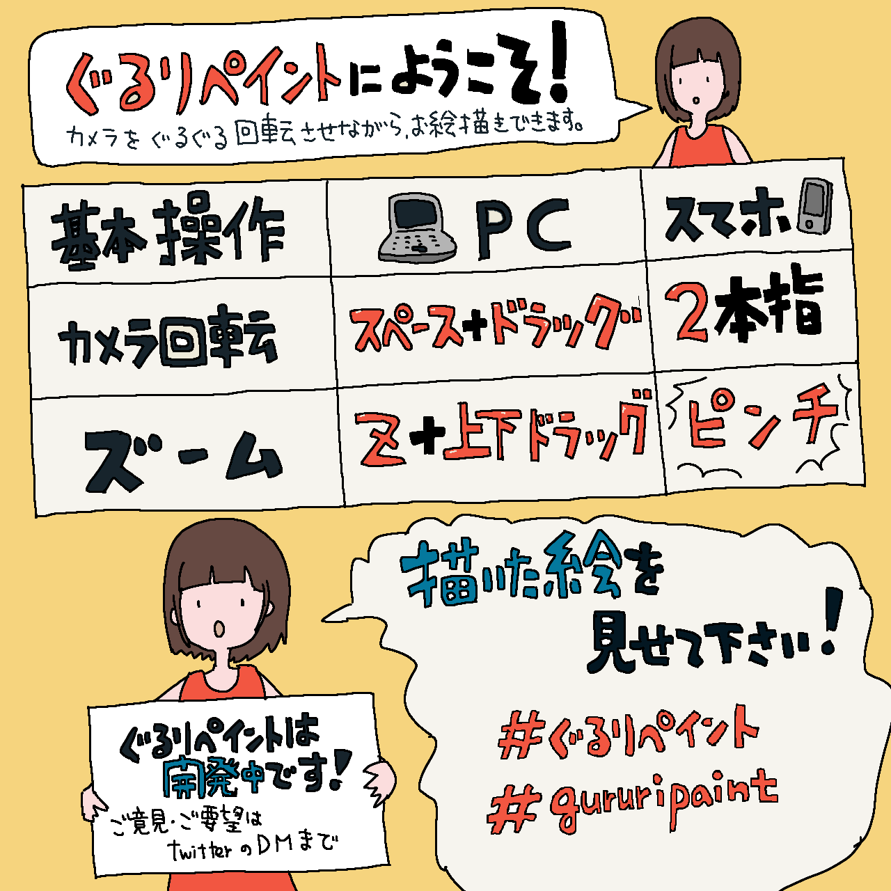

ぐるりペイント
↶
↷
ファイル
データ保存(.gururi)
インポート(.gururi)
PNG保存(2：1画像)
編集
元に戻す
やり直す
プレビュー
設定
ショートカット
ヘルプ
はじめに
目線
−
＋
m
補助グリッド
EN
はじめに
描画
レイヤー
設定
はじめに
日本語
English
×

Xをフォロー
開発について読む・応援する
ツールを追加
×
カメラ
現在見えている360°空間を通常の画像として撮影します。
追加
ショートカット設定
×
変更したい項目を押してから、新しいキーを押してください。
ペン
消しゴム
バケツ
スポイト
手のひら
見回し
ズーム
カメラ操作（水平）
標準
反転
カメラ操作（垂直）
標準
反転
初期設定に戻す
保存
設定を保存しますか？
する
しない
出力サイズ
2048 × 1024
4096 × 2048
8192 × 4096
ダウンロード
閉じる
▼